Galería de Obras en Proceso

Mujer tomandose el pelo 1
En proceso
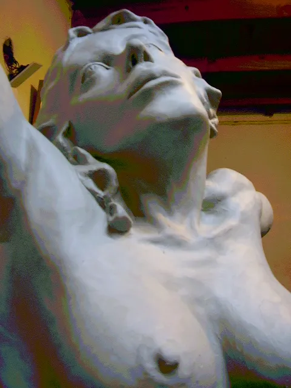
Mujer tomandose el pelo 2
En proceso
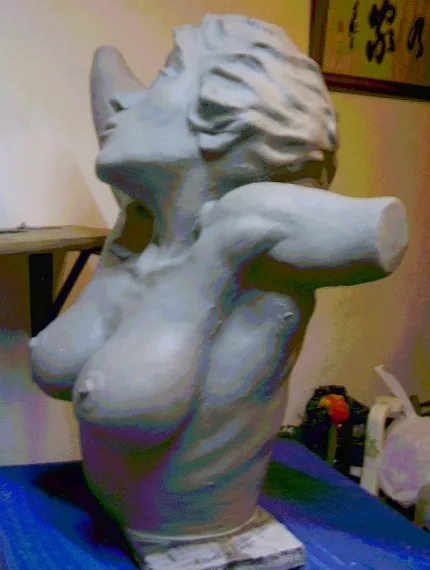
Mujer tomandose el pelo 3
En proceso

Mujer tomandose el pelo 4
En proceso
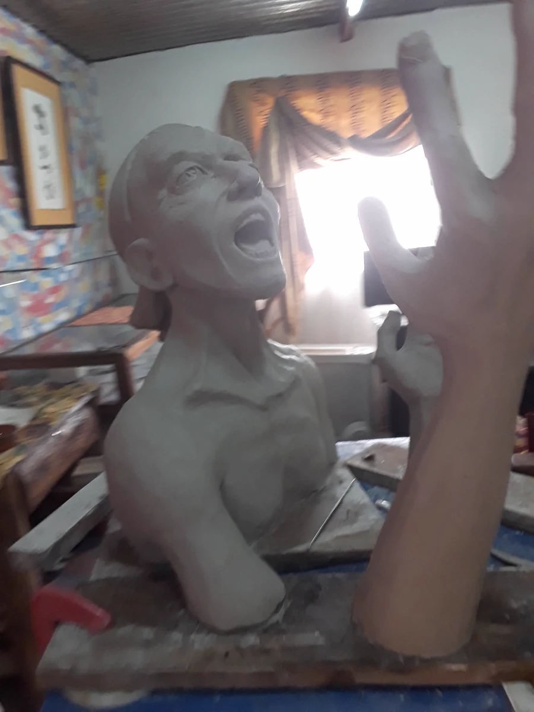
El Grito 1
En proceso
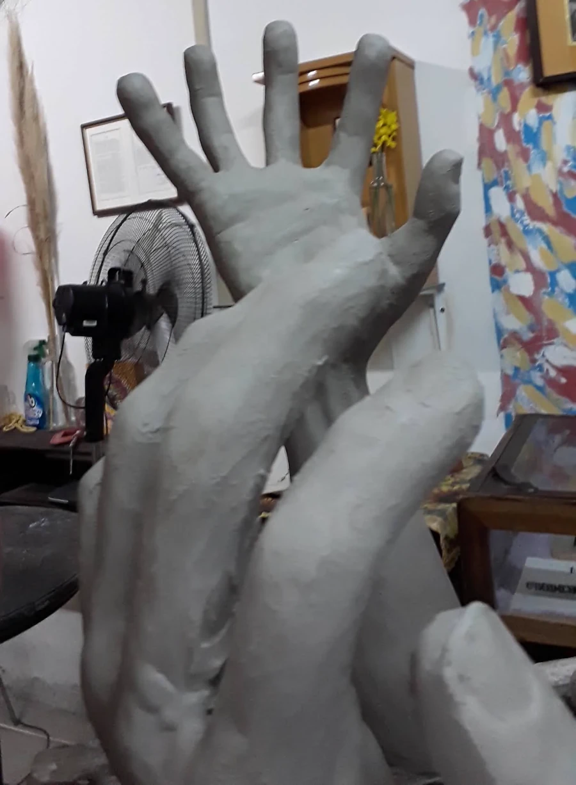
El Grito 2
En proceso
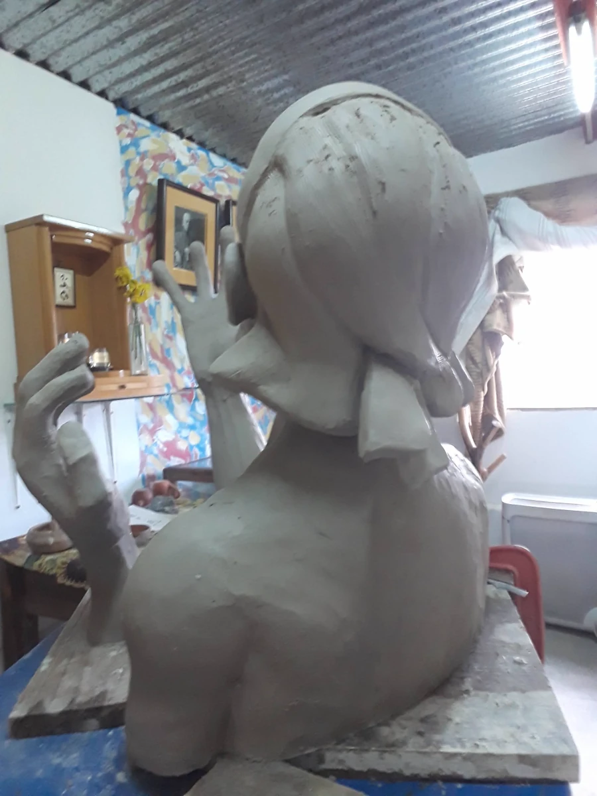
El Grito 3
En proceso
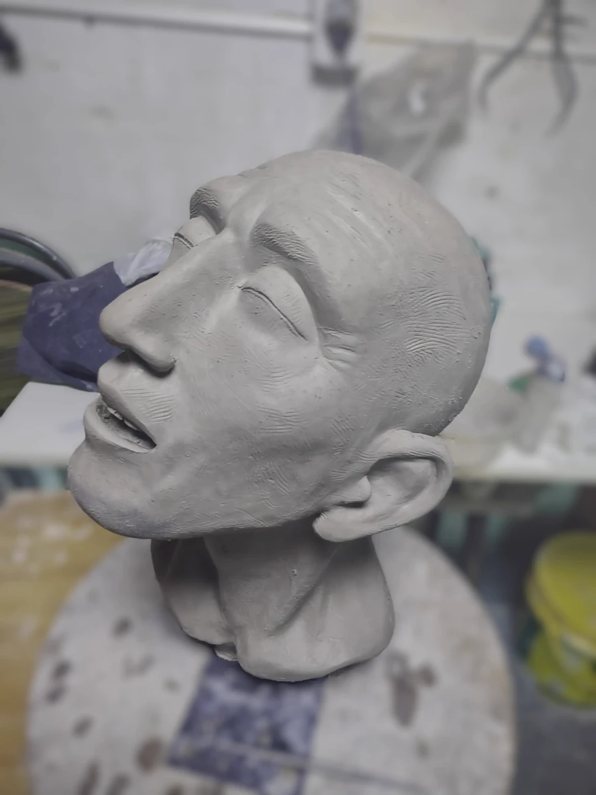
Extasis
1En proceso

El Espanol
En proceso
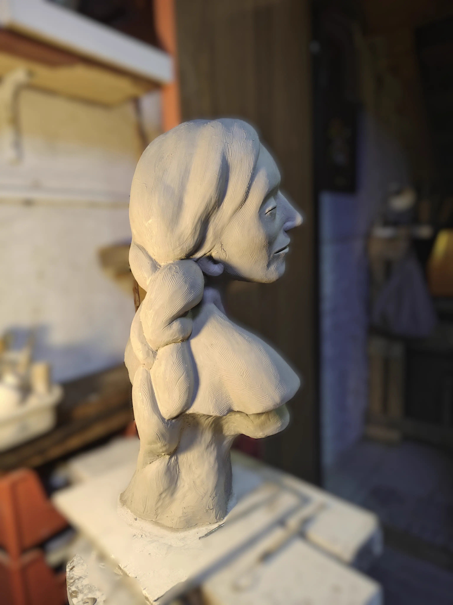
Mujer con trenzas
En proceso
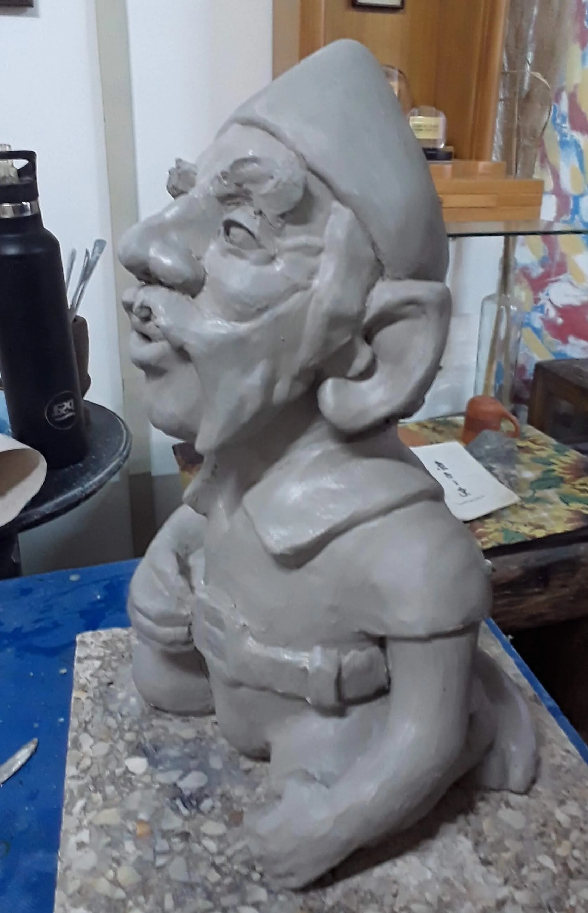
Enano jardin
En proceso
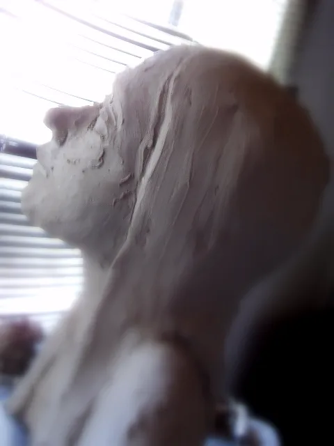
Luz 1
En proceso

Luz 2
En proceso
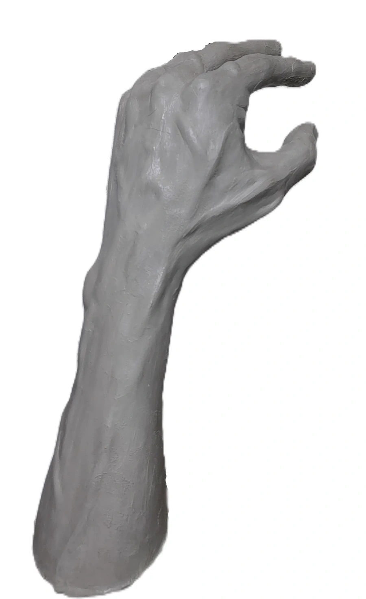
Brazo de hombre
En proceso
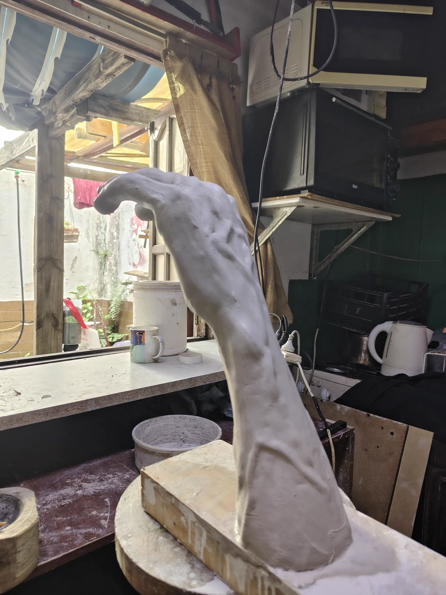
Mano
En proceso
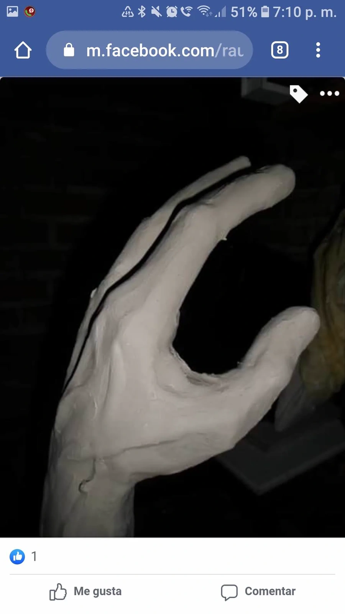
Mano F1
En proceso
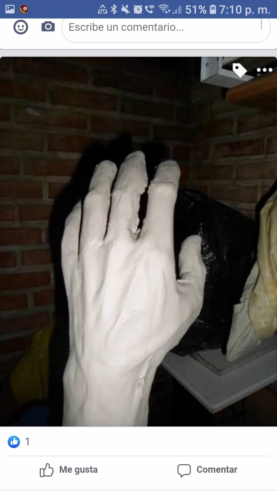
Mano F2
En proceso
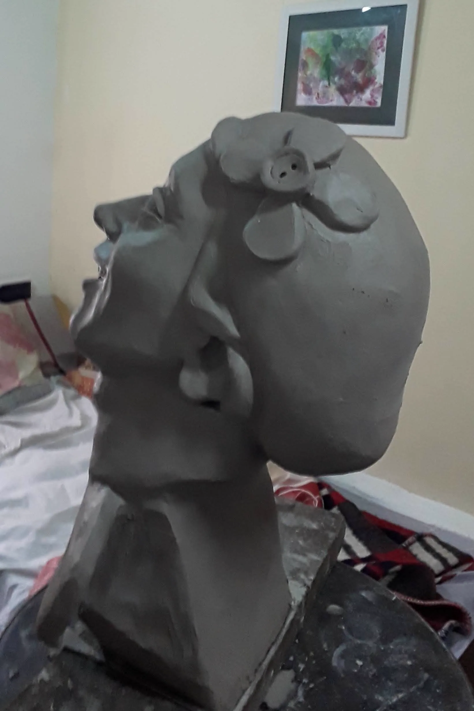
Mujer con flor
En proceso
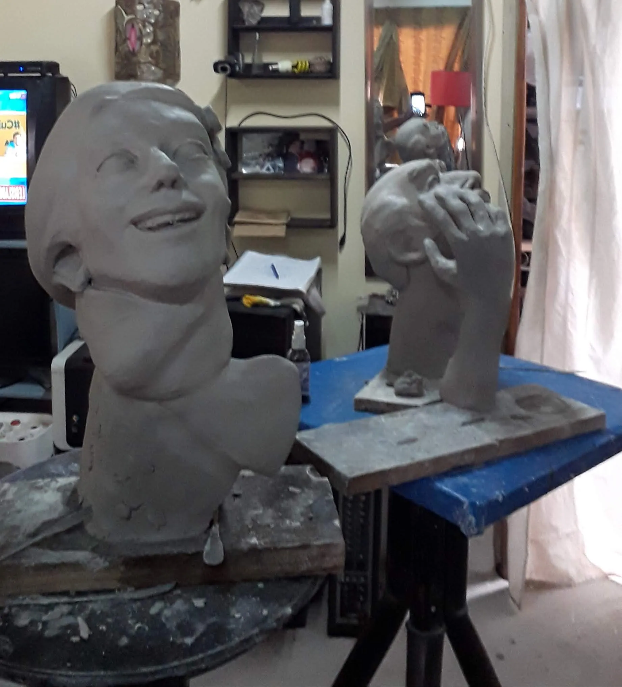
Mujer flor y Español
En proceso

Cerámica 1
En proceso

Cerámica 2
En proceso
Galería de Videos


×